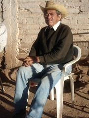
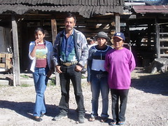
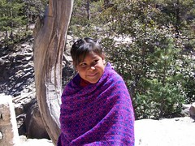

Mexico Blog (In Order)
Feel free to email .
Our house is sold, the car is sold, we're ready to go
Well, we fly to Phoenix on Saturday the 27th to start our adventure anew! Our house sold (accidentally-we were going to rent it out), our stuff is packed. We have our rabies and Hepatitis B shots. Our finances are in order. We have a place to store our household goods. We're ready to head from Mexico to the bottom of South America!
The website is not updated for the next part of the trip, but I'll get to that eventually.
As I said, we sold our house accidentally. We decided to rent it out and hired a rental manager. They came and put up a sign, and a day or so later our neighbors 5 houses up the street came down and said "can we please, please, please buy your house?" We said yes, and the deal has already closed. Pretty amazing way to sell a house.
I've been selling stuff like crazy on Ebay, Craigslist, and Amazon. Almost all of my technical books are gone, along with old electronics, etc. Normally this stuff just eventually gets thrown away, so I'm pretty happy to be getting a little bike touring money off of it. A $50 sale is at least day of bike touring...
Starting off again - it's all strange and new
It's still the middle of a difficult winter in Denver (no bike riding for us in the last few months) but we flew yesterday to Phoenix, Arizona, to start our ride south. We're starting up again!
As you know, we finished up the first segment of the ride in San Diego/Tijuana in late October, and went home to get our affairs in order for the rest of the ride. We sold our house, sold our car, put everything we kept (not much) in storage, and are ready for a ride of at least two more years to Ushuaia, at the southern tip of South America.
We went for a test ride today and it's all strange - the bikes feel different and we feel out of shape. And of course we're threatened by what lies ahead, wondering if we're in good enough shape. As always, we'll try to take it a day at a time.
Our plan is to ride south through Tucson and Patagonia, Arizona, to Nogales, and then enter the Mexican state of Sonora, and head south from there. We hope to go up to Copper Canyon through a new route (coming in from the west) and then we'll down the Mexican heartland toward the Central Valley and Mexico City.
Come along and join us! If you haven't already signed up for the email list, we invite you to sign up at hobobiker.com/subscribe. We're delighted to have you along.
Phoenix to Tucson: SHAKEDOWN Brrrrr!
I don't think we expected the cold to follow us from Colorado, but we found out! The first day out from Phoenix was an easy day with an easy desert campsite. But the next day we got caught by the afternoon rain (and hid out in a motel). But the third day was all a gradual climb, with gradually increasing (cold) rain until we finally bailed into the desert beside the road as dusk approached. It was so cold and wet! We just huddled and tried to warm up and never did cook dinner. And in the morning I didn't ever get the courage to get up and fix the coffee like I do every morning. Nancy had to seize her role as Chief Courage Officer and get up and do all that. Finally we dragged out, and the final ride into Tucson wasn't really all that bad. But we sure hope it doesn't rain that much all the time!
To add insult to injury, I had *two* flats on the way from Oracle Junction into Tucson. That's the number of flats I had in the entire 4700 miles we rode from June to October. What's up with that?
We're enjoying a couple of fine rest days with great friends here in Tucson, and catching up on a little bit of work.
Shakedown Ride: Still kicking around Tucson

Well, here we are again, on the road again. We arrived in Tucson on Thursday of last week and here we are on Tuesday still in Tucson but we are on the southern most part. We enjoyed a wonderful stay with Caroline and Mary in their beautiful home near Sombrero Point. The stay was useful as we got to get the last last kinks worked out of gears and backs. I had to go to the chiropractor to straighten out my back and to the dentist to check out the tooth from hell which I had pulled three days before we left Denver. The visit was also wonderful to share their home and friendship. And we got to watch the Super Bowl. Go Bears!
We headed back on the road Monday morning and road through the West Saguaro National park on some good sandy remote roads. It is the strangest site to see multiple-armed saguaro cactus marching throughout the land. I always think of cartoons when I see a landscape of cactus. Of course we had to stop by the Desert Museum for the afternoon. Randy remembered the tortoises from when he was a kid and wanted to see them again. Unfortunately they are in hibernation so we did not get to see any. I loved seeing all the different large Cats and the Javalina which looks like a wild pig but is not.
During the ride this day I keep hearing a creak on the back of my bike drove me crazy. Neither one of us could figure out where it was coming from. We even changed wheels and it followed with the wheel. We decided to stay in town so we could go to a bike store the next day. It has been a long time since I slept in a baseball dugout but if you ever have a chance you might give it a try. The roof is covered, it is fenced in and is relatively safe. And there are bathrooms nearby.
Today we rode to Ajo bikes, an extremely well-stocked store and employees who wonderfully helpful and patient. After hours of trying to figure out where the creaking sound was we discovered the rim had a radial crack a quarter way around on the braking sidewall. We had them build another wheel up and finally got out of there around 4:00. We rode for an hour and made it to the Crazy Horse RV Park and Campground. We even got a warm shower. It seems funny but after only one night out in the park with no showers, the shower tonight made me feel like a queen and so appreciative of simple pleasures of warm clean water against my not so road-weary skin. Life is so good to us.

Into Mexico

We are in Magdelena de Kino. We rode 68 miles yesterday through - from
Patagonia through the border crossings to Imuris, Sonora, Mexico. What wonderful folks.
All sorts of people giving us waves and friendly beep and calling out from
the side of the road. The Nogales border crossing from Mexico to the
United States was had a line of semi trucks three deep and miles long waiting
to get into the USA. We got so many waves and beeps and whistle it was
almost embarrassing but I still kind of enjoyed the attention.
As evening approached we got looking for a place to camp for the evening a
guardian angle appeared. This American from Tucson stopped by the edge of
the road to say hi and ended up escorting us to his house 20 miles away.
He drove in back of us with his lights blinking and flashing. Our private
support vehicle. Bill is truly an angel.
We got to his house and he told us his story. He buys food and clothes for
the people down here and gives it to them to either use, sell or give
away. He makes 3 trips a week from Tucson to Imuris or Guaymas full of
much needed goods. Some of goods goes to the Rancho which is like a
seminary and some goes to the local orphanage. The orphanage is not like
what we think of as a home for children with no parents. It is a place
that helps children with their needs. Perhaps they have parents that just
do not have enough resources to fully provide for the children the
orphanage helps out. He buys clothes, noodles and cereal in bulk from
Costco or air conditioners for the orphanage. All out of his own pocket.
He built the house in Imuris so he could have a place to store the goods
and then distribute them from there. I have not seen a person who has ever
given more of himself to other people then Bill from Tucson. He is an
extremely open and loving person who also has a blast doing this with his
life. I am sure Bill has a place in the big house when he leaves this
earth.
Camping in the Sonora Desert
Riding along the four-lane divided highway that is Highway 15 I was thinking about some of the things I like about Mexican drivers. Two things I like:
1. The Mexican drivers do their absolute best to give us some space on the road. The truck drivers try to move over as soon as they see us (and there are two lanes in each direction, so it works most of the time).
2. Mexican drivers know how to use their horns to communicate, not just to irritate. They have one honk to say "watch out" and another to say "go for it" and yet another to say "hey -what a beautiful woman!"
(We're in Hermosillo tonight in a nice hotel, quite a contrast from the two previous nights in the desert.)
Camping at the rural police station

We stayed a police station last night. Evening came, and dark was nipping at our heels as we came to a intersection of two roads. The store and the gas station were the only thing around and they were both closed. The man with the little hot dog stand was closing up but had four hot dogs for sale which we gladly purchased and greedly wolfed down.
In the dark we noticed another building with a TV playing and a police car in front. We went to the door and knocked. We asked permission to camp there at the police station, a very safe place to stay.
Two of the policement asked if we needed anything.. I said yes - I would like two cans of beer. They went to the town many miles away 45 minutes later drove back with their lights flashing. The beer had arrived.
There are 5 guys who live at the station for a week to ten days, 24 hours a day. They make 100 dollars a month. Wow.
In the morning the commander Armando, "el commandante", welcomed us with such openess this had to be the friendliest person I ever meet. He turned on the warm water to the shower in the concrete shower stall so we could have a "regadera". We all talked and laughed in the morning. They let us use the kitchen and TV. One guy taught me Spanish and I taught him English. They police used their trucks to drive the kid to school.. I wish I had picture of 15 kids sitting in the back of a police pickup truck, with one girl. The kids parked their bikes at the police station and went to school. As we rode away the Commandante, Armado, followed us in his car, turned his megaphone on and said "God Bless Randy and Nancy in Spanish.
Big Trip Photos: Latin America 2006-2009
- Nancy's Art or (as a slideshow).
- We also have our favorites from the trip here.
- Canada Photos - Starting from Inuvik
- USA West Coast Photos
- Mexico:
- Arizona down to Alamos, Sonora (or as a slideshow)
- Alamos to Parral (Copper Canyon) (or as a slideshow)
- Parral south to Zacatecas - March/April 2007
- South from Zacatecas
- Mexico City and around
- Cholula south through Oaxaca state, and Veracruz
- Chiapas, Mexico pictures
- Central America:
- Guatemala Pictures
- Friendship Bridge Señoras we met
- Guatemala south to Nicaragua
- Nancy's photos of the flowers we saw in La Tigra National Park in Honduras
- Agua Para La Vida visit in Rio Blanco, Nicaragua
- Costa Rica and Panama
- Sailboat trip from Panama to Colombia
- Colombia to Medellin
- Second half of Colombia (or as a slideshow).
- Ecuador (or as a slideshow).
- Galápagos Islands (or as a slideshow).
- Northern Peru (or as a slideshow).
- Southern Peru (or as a slideshow ).
- Salar de Uyuni in Bolivia or (as a slideshow).
- Other Bolivia Photos or (as a slideshow).
- Argentina or (as a slideshow).
- Chile or (as a slideshow).
- Nancy's Art or (as a slideshow).
- We also have 290 of our favorites from this part here.
- All our photos are on Flickr
Alamos and our recent riding
It is the beginning March as I write this. We have pedaled many kilometers in the last two weeks and seen varying parts of Mexico. After our stay at the jail with Armando we bicycled through the agricultural plain of the Rivers Mayo and Yaqui. The terrain has been as sweet as we could possible asked for: the roads are a bicyclist’s dream come true: wide roads, new asphalt, and little or no traffic. We did ride on the big toll road highway 15, called the cuota, for a few hundred miles which took a bit of concentration and raw guts at first. The divided four-lane highway is the way the big rigs, semi-trucks and buses go long distances with their loads. There are no shoulders on the cuota but when the trucks and buses saw us they pulled way over the the other lane and gave us the whole lane. The drivers here work together in cooperation and avoid obstacles like us on the road. It is very inconvenient for them to ruin their vehicles with the likes of us or other things that wander on the roads.
Along the way we camped or stayed at various interesting places like a school house at La Guasima. The principal of the school, Martin, opened up one of the school rooms and the bathroom for us. The children came from every where asking questions and peering at us though the open windows of the school. Martin´s family invited us to dinner in their simple two room home. The only room we saw had the stove, the kitchen table and three beds. The dinner of beef and beans and tortillas was wonderful and very generous of them, something I wondered if they really could afford to feed us. In return we gave them the brocoli and squash had purchased for our dinner but this gester was so small compared to the gift of inviting us into there lives.
What we saw of the water situation, there was no running water. Before dinner at Martins house we washed our hands outside in a bucket of clean water and threw out the water in a dirt channel outside the front door. At the school to flush the toilet, you went outside next to the bathrooms and filled a 5 gallon bucket with water from an underground concrete sistene with an opening large enough to reach down to fill a hand held bucket. After filling the 5 gallon water you would pour it into the top of the tank and flush. After finishing this, it is proper to refill the tank again to be ready for the next person. By the way if you visit Mexico make sure to bring toilet paper and do not throw it in the toilet because the systems can not handle paper. Throw it in the waste bucket next to the toilet.
I learned how to use the restroom at this school from several 10 year old girls. They laughed with me as they showed me how the systemed worked.
We rode on through miles and miles of irrigated fields of wheat, corn, carrots, potatoes, tomatoes and asparagus. It amazed me how the desert can be turned from a ground of hard packed earth which can scarsely support cactus to vast farmlands, surrounded by large water canals, employing bent-over workers toiling long hours to produce the food we take for granted. At the end of the day, busloads of tired workers peered out the dusty scratched windows with inquiring eyes. Many of the folks passing us would put aside their bone tiredness to beep, wave and smile as they passed us. How strange we must look to them, but still they all seemed to say welcome and enjoy yourselves.

Another Martin (shown here) was our host at Pueblo Yaqui when we ran out of daylight one night. He had the least of any Mexican we've stayed with. No electricity or running water or bathroom of any kind; he cooked nice food in the morning on a wood fire.We finally reached the ocean again and had a rest at Huatabampito, a very small fishing village at the end of a deserted road. We rented a beach house right on the ocean for one night. The room and the bed were huge. We had our own patio and lounge chairs and palm trees where we enjoyed the sunset full of every color of crimsons, yellows and oranges. It seemed the sunset was order just for us. For nearly and hour the colors kept changing. I put the camera away 5 times thinking it was the end of this light show but I was delighted to see I was wrong. I would go inside to put a way the camera and Randy would say “boy you should see these colors.” So I would come out to a sunset again different from just a minute ago.
We could not swim in the water because the manta rays are close to shore. I heard the sting from a ray will make grown men tear out their hair with pain. Only a shot of painkillers will ease the pain.
In the morning we headed to Navojoa where we stayed in the Hotel California and left in the morning to head for Alamos. We stayed in Alamos for a week. Alamos is a town that blends the ancient, with the traditional and new. It has culture, family, gringos, religion, food and education. A week is the longest time we have spent in a Mexican town and every day something new seemed to happened. We went to dinner almost every night with new friends we met. During the day, I went to school to learn Spanish at the ALL School (All Language Learning) I spent the mornings with my teacher Estella having private lessons. She is a native Spanish speaker with English as her second language. She provided excellent instruction with patience and answered my endless questions and gently corrected my awkward attempts at the language. The first day was exhilarating, the second day my head spun, the third day was easier, the forth day I finally had a breakthrough where certain things made sense, and I was so pleased to get it. I pleases me (me gusta) that I can learn and I look forward to having people understanding me someday. One thing I learned today is to make sure to say the word for year correctly, (años) when asking how many years do your have.
Website Updates - Hope you like it
We re-did the website - Hope you like it! You can now get to lots of things on the links up on top. Some of the changes:
- Info from all of the trips is available in order if you want it that way. It's kind of hard to read everything backwards! So for example, you can choose "Canada" from the top of the screen and read about our Canadian adventures in order.
- Buttons on the top lead you to the most-commonly-requested articles.
- I added a "Contact" page in case people want to get in touch with us.
Luis Alfonso Valencia - Bicycle commuter near Navojoa
Do you notice the wonderful reflectors he has for safety on the back of the bike? They're discarded CDs. So why do we use anything else? We're going to try to get some for our bikes.
In the flat agricultural region from Navojoa to the sea we saw many, many cyclists, mostly on bikes like Luís's. In one small city we saw three bike shops in one small region of the downtown. And we've seen bike shops in several towns we've been in. We're just hoping they have some of the parts we need when the time comes.
Efrén and his family in Humirá

A couple of nights ago we stayed in Humirá with some of the most impressive people we've met on the trip. Humirá is right before the really big climb out of the second canyon out of Creel, and we got there about 4:30, knowing we had about 25K and more than 2000 feet of climbing ahead of us. We stopped to chat with a farmer out working with his whole family on clearing trimmed wood from their apple orchard. When we decided to bail for the night we rode back and asked them if we could stay at their place. That's how we met Efrén. We helped with the wood-hauling until dusk, and then set up the tent. They fed us beautiful blue corn tortillas in the evening (we got to see the whole process).
Anyway, you might want to meet Efrén and his wife Lola some time. They live in a tiny two room house with no electricity or running water, but struck us as some of the most integral people we've ever met. It was amazing to see the girls studying by the little car-battery-driven light (on Friday night) and talking with Efrén about what their life is like and such. Although they're what we would consider quite poor in resources, they are community leaders - the day we left they had organized a community-wide highway trash pickup. And Lola is a community health worker.
Efrén would someday like to organize a foundation that could somehow channel help to the people who have even less than he does, especially Tarahumara but also the very poor mestizos. He invited us to come back after our trip and help set it up.
One of the biggest needs he mentioned are shoes and blankets. So if you read this and are going this way bring some extra shoes and blankets to drop off.
It is amazing to see how poor people can be but still be wealthy. I think the difference between the poor and the people who are in poverty, is a state of emotions and acceptance and community support. People can have nothing but they can be secure in what they have. People can have everything but have nothing because they have fear of losing it all. Or perhaps it is the fear that creates desperations and therefore real poverty..
We could have spent many days learning from this family.
Tarahumara girl at Curarare falls

We're now in Copper Canyon, the land of the Tarahumara. In Mexico they call this the Sierra Tarahumara (the Tarahumara mountains). [We tend to agree with the Mexicans about the perspective - it's *mountains*. ]
The Tarahumara people who have lived here for centuries are a fascinating people. The women are brightly dressed and the men have a special skirt that seems specially adapted to running, for which they are world famous.
The Tarahumara speak Spanish generally only as a second language (if at all) and live dispersed all over this region. They might live many, many hours on a winding mountain path from the nearest town or road. They seem quite shy, but this little girl gave Nancy a very pretty smile.
Candelario Viniegra Chavez in his 6th grade classroom
Well, Candelario now teaches 6th grade in a larger school in his home town, Samachique (still a very small town), which is at the turnoff to go down to Batopilas (where we are now). We stopped to spend the night with him and he greeted us with that same wonderful smile, and took us out exploring to his favorite caves. Samachique has electricity and running water. But look carefully at the picture (click to enlarge). This is his classroom. They have a classroom computer, internet (via satelite), and a smartboard, and a projector. All their lessons have special features on the computer, including video. Three of the classrooms at his school have this.
Just a couple of years ago, these kids would never have seen anything of the outside world, and now kids in a tiny town in rural Mexico have internet and multimedia to support their education. What kind of effect do you think that will have on the future of rural Mexico?
Exhacienda Minera near Batopilas
Even today there are mining activities in the far mountains in Copper Canyon where new roads have been built giving people access to areas of this region where before only foot access was possible.
View La Bufa in the bottom of Copper Canyon, Mexico
Here is a photo overlooking the road to La Bufa and eventually to Batopilas.
This area is the home to the famous Indians Traumara (Raramuri). One of the oldest people in North America, migrated to this area to avoid conflict with the Spanish Missionary. This shy group of people who live a subsistence life style can be recognized by their unique clothing and dark skin. The men wear a white loincloth, sandals, and an array of shirts and the women wear colorful layered blouses and skirts and large scarfs of multi designs.
It does appear the Traumara (Raramuri) have huge struggles with health, farming in this harsh climate though they have some of the most efficient farming methods known, and preservation of a culture that is in conflict with a monetary society.
The death rate for women giving birth is one in ten. The death rate amoungst children under 5 is 50 percent. Poverty amongst these people in this area is so rampant it touches everyone.
They do not beg for anything. Some families create crafts to sell and harvest what they can from the local tourists. A child will attempt to sell an item the family has made and if they can not interest you in their crafts, they may ask for a peso. If you want to take a photo of a Raramuri always ask first and pay for what you get.
Batopilas aquaduct
Along the way she swam in the Rio Batopilas river, panned for silver, meet a goat herder, and also a guide on a horse returning from a 3 day trip to Urique and back to Batopolis. Most stunning were the flowering cactus and trees found in this deep desert canyon.
Road down to batopilas
If you look very closely at this photo you may see the foot paths and used by the Tarahumara (Raramuri) Indians to access the resources of this canyon and the way the people of this region travel to and from the outback.
We hitched a ride down to the bottom with four Canadians driving this dusty, teeth rattling, back jarring road. It took around 5 hours to drive this 65k (40 mile) road. Around every corner was a new photo opportunity. We also hitched back with a kind couple from Mexico City who had hired a guide to bring them down and back up to creel.
(Thank you folks for the ride and the time we had to share).
The road was only really wide enough for one car so if another vehicle came around the corner, one of the drivers had to back up or down the road to a spot wide enough for both to squeeze by.
Randy at breakfast
We have decided this dish is an excellent meal to power us on our bike ride. (Protein, Fat, and carbohydrates). Tamales are another food we have discovered is an excellent biking food.
Update: New Pictures and a Podcast (Audio)
- Our location: We're in Parral, about 200 miles south of Chihuahua, having exited the southeast end of the Copper Canyon region. Nancy did up a wonderful new map of our route (below) so you can see our route.
- New pictures: There are a lot of new pictures on the photos page.
- Podcast: We have started an experimental podcast (audio listen) for you. Click the Podcast button on the top of the page.